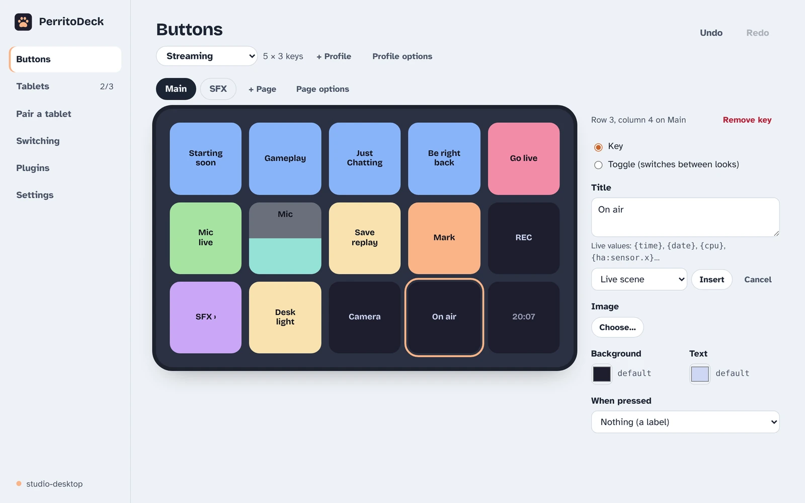
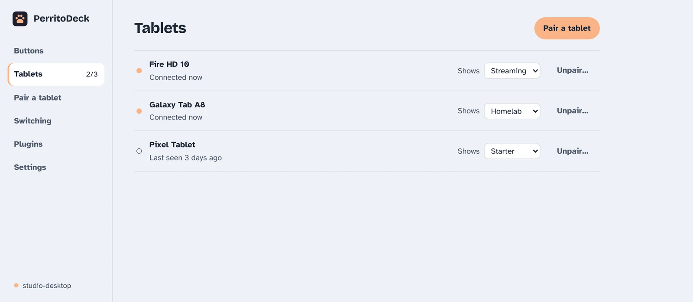

Buttons and profiles
Everything about designing what's on your tablet: buttons, pages, toggles, sliders, images, live values, and profiles for different tablets and apps.
The Buttons page
Open PerritoDeck on your computer and click Buttons. You'll see:
- At the top: which profile you're editing, + Profile and Profile options, plus Undo and Redo.
- Page tabs: one tab per page of buttons, with + Page and Page options.
- The grid: your buttons laid out as the tablet shows them. Empty spots show a +.
- On the right: the settings for the button you've selected.

There's no Save button. Every change is saved as you make it and reaches the tablets straight away. Undo (Ctrl+Z) and Redo (Ctrl+Shift+Z) cover every change.
Make or change a button
- Click an empty spot to add a button, or an existing button to change it.
- Type a Title. Two short lines fit best; press Enter for a line break.
- Optionally pick an Image and the Background and Text colours. Reset puts a colour back to the default.
- Choose what happens When pressed and fill in the details.
- Click Try it to test it from the computer.
To delete a button, select it and click Remove key, or press Delete.
What a button can do
| When pressed | What it does |
|---|---|
| Nothing (a label) | Just shows its title. Handy for a clock or a live value. |
| Open a page, Go back, Next page, Previous page | Moves between pages of buttons (see Pages). |
| Switch profile | Switches the tablet you press it on to another profile, optionally at one of its pages (see Switch profile buttons). Needs a second profile. |
| Press a hotkey | Presses a key combination, like Ctrl+Shift+M. Click Record and press the keys, or type them. |
| Type text | Types the text exactly as written, into whichever window is in front. Up to 2,000 characters; on Windows it types about 100 characters every 1.5 seconds, so long texts take a while. |
| Media key | Play / pause, next or previous track, stop, volume up or down, mute. Works with whatever is playing. |
| Open a website | Opens a web address in your browser (also mailto: links). |
| Open a file or folder | Opens it with its usual app. |
| Start a program | Starts an app and leaves it running. |
| Run a command | Runs a program and waits for it. The button flashes ✓ when it succeeds and ⚠ when it fails. You can set a time limit: 10 seconds if you leave it empty, 10 minutes at most. |
| Slider | Turns the spot into a slider you drag on the tablet (see Sliders). |
| OBS Studio, Home Assistant | Built-in integrations (see Integrations). |
| Plugin actions | Each plugin you've added gets its own group in the list (see Plugins). |
| Several steps | Runs several actions in a row (see Several steps). |
| Random action | Runs one of several actions, picked at random on each press (see Random action). |
On a Mac, use Meta for the Cmd key: copy is Meta+C, not Ctrl+C. On Windows, Meta is the Windows key.
When a button's action has a problem (for example OBS isn't running), the button flashes ⚠ on the tablet and the tablet gives a longer buzz.
Move and copy buttons
- Drag a button onto another spot to move it, or onto another button to swap them.
- Drag a button onto a page tab to send it to that page.
- Ctrl+C and Ctrl+V copy the selected button to another spot.
- With the keyboard: arrow keys move the selection, Alt+arrows move the button itself.
Pages
When one screen isn't enough, add pages. Pages work like folders: a button opens a page, and a Back button on that page brings you back.
- Click + Page to add one and give it a name.
- Double-click a tab to rename it. Page options has Move left, Move right and Remove page.
- To get to the new page from the tablet, add a button with Open a page and pick the page. Then, on the new page, add a button with Go back.
- In the editor, double-click a page button (or select it and press Enter) to jump to its page.
Toggles
A toggle switches between two or more looks, each with its own title, colours and action. The starter layout's microphone button is one: it shows Mic live in green, and after a press, Mic muted in red.
- Select a button and choose Toggle (switches between looks) at the top of its settings.
- Click each state's tab and set its title, colours and action. + State adds a third, fourth and so on.
Each press runs the current state's action, then moves to the next state.
Toggles that follow what's really happening
A plain toggle can get out of step: if you stop recording with the mouse, the tablet still says "recording". To fix that, fill in Follow a live value (or use Choose a value to follow…). The toggle then shows its second state exactly while that value is on, however it changed. For example, follow obs:recording to have a REC button that's red while OBS records. Write the name with or without braces: obs:recording and {obs:recording} both work.
Sliders
A slider fills one spot; drag up and down on it to set a level. The tablet gives a small tick every 10% as you drag. Choose Slider under When pressed, then pick what it sets in Slider sets:
- The computer's volume.
- A Home Assistant light's brightness, e.g.
light.desk. - An OBS audio source's volume, e.g.
Mic/Aux. - A program, with the value: runs a program with the slider's position (0 to 100) wherever you write
{value}in its arguments. - Plugin sliders, such as the HTTP plugin's Send the slider's value or MQTT's Publish the slider's value.
A plugin slider can also follow one of the plugin's values, so it sits where the plugin says: pick the value under The slider follows. For a value that needs more, such as the OBS plugin's Source volume (0–100), type the rest in the box that appears (here Audio source to follow), for example Desktop Audio.
If the level changes on the computer, the slider moves to match within a few seconds, and every tablet showing it stays in step. Dials and touch strips like those on some hardware decks are coming; sliders cover the main uses for now.
Several steps
Choose Several steps (under Advanced) to run a list of actions in order, with optional pauses between them, such as "select all, wait a moment, copy". For now the steps are written as text in a format called JSON; the box starts with an example you can adapt:
[
{ "action": { "type": "hotkey", "keys": "Ctrl+A" }, "delayMs": 100 },
{ "action": { "type": "hotkey", "keys": "Ctrl+C" } }
]delayMs is the pause after a step, in thousandths of a second. Each action is written the same way as in the profile file (see the action reference below).
Random action
Choose Random action (under Advanced) for a button that does something different each time: one of a list of actions, picked at random on every press. Good for sound clips, chat replies or a random scene. Like Several steps, the list is written as JSON, and each action is written as in the profile file:
[
{ "type": "text", "text": "Good game!" },
{ "type": "text", "text": "Well played!" }
]The list needs at least one action. An action in the list can itself be Several steps or another random action, up to four levels deep.
Images and animated GIFs
Under Image, click Choose…:
- Search the built-in icons (type "mic", "light", "play"…). They're drawn in the button's text colour.
- From a file… uses your own picture: PNG, JPEG or GIF. Large pictures are shrunk to fit.
- Animated GIFs play on the tablet. Keep them under 4 MB; very long animations are cut short.
The title is drawn over the image. Leave the title empty for an image-only button. Remove takes the image off again.
Technical details
Your computer draws every button as a picture at the tablet's exact size and sends only the ones that changed. Images you pick are copied into the profiles folder under icons/ (PNG and JPEG scaled to at most 288 px). Animated GIFs are sent as frame changes, at most about 12 a second and up to 120 frames. Animated PNGs are coming.
Live values in titles
A title can show information that keeps itself up to date: the time, the date, how busy your computer is, the current OBS scene, the temperature outside. Write the value's name in curly braces, or click Insert a live value… under the title, choose a value and click Insert.

Built-in values
| Write | Shows |
|---|---|
{time} | The time, e.g. 21:07 |
{time_s} | The time with seconds, e.g. 21:07:45 |
{date} | The date, e.g. Sun 11 Oct |
{cpu}, {mem} | How much of this computer's processor and memory is in use, in percent |
{obs:scene}, {obs:recording}, {obs:streaming} | OBS's current scene, and whether it's recording or streaming (needs OBS set up) |
{ha:sensor.outside} | A Home Assistant entity's state, with its unit, e.g. 18.5 °C (needs Home Assistant set up) |
{ha:light.desk.brightness} | One attribute of a Home Assistant entity |
Values from plugins
Plugins add many more values. In the Insert a live value… list, each plugin has its own group. Some values need you to say what to show (a city for the weather, a timer's name); a box appears for that. For example, the Weather plugin's temperature for Lisbon is written:
{plugin:dev.perritodeck.weather:temp:Lisbon}Mix values with ordinary text: CPU {cpu} or Tea\n{plugin:dev.perritodeck.timer:remaining:tea}. See the plugin list for more examples.
Until a value is known (OBS isn't running, or a plugin hasn't reported it yet), the key shows – in its place. A name PerritoDeck doesn't recognise, such as a typo or a value from a plugin that isn't installed, stays exactly as you wrote it, braces included, so it's easy to spot.
Technical details
PerritoDeck only fetches values that some profile actually uses. Home Assistant and the built-in OBS values are checked every 2 seconds; plugins decide their own timing (the Weather plugin, for instance, every 10 minutes).
Profiles
A profile is a complete layout: its pages and all their buttons. You might have one for streaming, one for work and one for the living room tablet.
- + Profile makes a new, empty profile with one page.
- Profile options lets you Rename it, Make a copy, Open the file, Export…, Import a profile… or Delete profile.
- The profile marked (default) is what tablets show unless you choose otherwise. It can't be deleted.
If a profile has a mistake in it (usually after editing the file by hand), it's marked has a mistake in the list, and the tablets keep showing the last version that worked.
A different profile on each tablet
Once you have more than one profile, the Tablets page shows a Shows menu next to each tablet. Pick the profile that tablet should show.

Switch profile buttons
A button can switch profiles too: choose Switch profile under When pressed, pick the profile, and optionally the page it opens at (Its first page otherwise). Pressing it switches only the tablet you pressed it on. Put a button back to the first profile on the other one, so you can find your way home.
A switch from a button counts the same as picking the profile on the Tablets page: the tablet keeps it, even after restarting. If switching by app is on, a button press wins until a different app comes to the front; then the rules apply again. If the profile has since been deleted (or its file renamed), or the page deleted or renamed, the button flashes ⚠ and nothing changes. Renaming a profile in PerritoDeck is fine.
New profiles fit their grid to each tablet's screen. The starter profile is the exception: it uses a 5 × 3 grid on every tablet. To change that, remove its [grid] lines in the file (see the file reference).
Switch profiles by app
PerritoDeck can show a different profile while a particular app is in front, for example your streaming buttons while OBS is open, and go back when you leave it.

- Open the Switching page and tick Switch profiles by app.
- Switch to the app you want, then come back to PerritoDeck. The app now appears in the list of names.
- Click Add a rule. Under When this app is in front, type or pick the app's name; under Show, pick the profile; under On, pick Every tablet or one tablet.
The first matching rule wins. When no rule matches, each tablet goes back to its own profile.
App names are the program names your system uses, which aren't always what you'd expect: OBS on Windows is obs64, for example. That's why it's easiest to switch to the app first and pick it from the list.
This works on Windows, macOS and Linux desktops that use X11. On Linux desktops that use Wayland, switching by app isn't available yet (here's why).
Share or back up a profile
Profile options → Export… saves the profile and all its images as one .perritoprofile file. Use Import a profile… to load one on another computer, or to restore it.
When a profile you import has keys that run things, PerritoDeck lists them before adding it: keys that run a program or command, open a file, use a plugin, or type something and then confirm it with Enter, Space or a Tab, whether as text or one key at a time. Each shows its page, its position and exactly what it does. Choose Import everything only if you trust whoever made the file. Import with these keys off keeps how they look but removes what's listed, so you can see where they were and set them up yourself. Cancel adds nothing. Profiles without such keys are added straight away.
Passwords and tokens you've saved for OBS, Home Assistant and plugins are never part of a profile. What's on the keys is: text a key types, commands and their arguments, web addresses, plugin settings and live values in titles. Look through those before you share a file.
Editing the profile file by hand
Every profile is a plain text file in a format called TOML, and the editor is just a friendly way to change it. You never need to touch the file, but some people like to: it's quick to copy many buttons, and you can keep notes in it. Use Profile options → Open the file to open it in your text editor.
Save the file and the tablets update within a second. If something's wrong, the Buttons page says Your last edit to the file wasn't applied and shows what to fix; the tablets keep the previous version until then. Comments (lines starting with #) are kept when you also edit in the app.
The starter profile is full of comments explaining each part. Here's a short reference.
Reference: the profile file
The basics
schema_version = 1
name = "Streaming"
[grid] # optional: leave it out to fit each tablet's screen
cols = 5
rows = 3
[[pages]]
name = "Main"
[[pages.keys]]
at = [0, 0] # [row, column], from 0 at the top left
title = "Play /\nPause" # \n is a line break
bg = "#A6E3A1" # background colour
fg = "#11111B" # text colour
icon = "icons/play.png" # optional, relative to the profiles folder
action = { type = "media", key = "playPause" }Each [[pages]] starts a page; each [[pages.keys]] under it is one button. The first page is the one tablets open on.
Actions
action = { type = "hotkey", keys = "Ctrl+Shift+M" }
action = { type = "text", text = "Hello! " }
action = { type = "media", key = "volumeUp" }
# playPause, next, previous, stop, volumeUp, volumeDown, mute
action = { type = "openUrl", url = "https://perritodeck.dev" }
action = { type = "openPath", path = "C:\\Users\\me\\Videos" }
action = { type = "launch", program = "obs64.exe" }
action = { type = "command", program = "hostname", args = [],
timeoutMs = 30000 }
action = { type = "obs", op = "scene", scene = "Gameplay" }
action = { type = "homeAssistant", service = "light.toggle",
entity = "light.desk" }
action = { type = "plugin", plugin = "dev.perritodeck.timer",
action = "start",
settings = { name = "tea", minutes = 4 } }Hotkeys are modifiers (Ctrl, Alt, Shift, Meta, also written Cmd or Win) and one key: any single character, F1–F24, Enter, Tab, Space, Esc, Backspace, Delete, Insert, Home, End, PageUp, PageDown, CapsLock, an arrow (Up, Down, Left, Right), or punctuation by name (Plus, Minus, Comma, Period, Slash…). Programs take their arguments as a list (args = ["--flag", "value"]); nothing goes through a shell.
Several steps
[[pages.keys]]
at = [0, 2]
title = "Select all\n+ copy"
[pages.keys.action]
type = "multi"
steps = [
{ action = { type = "hotkey", keys = "Ctrl+A" }, delayMs = 100 },
{ action = { type = "hotkey", keys = "Ctrl+C" } },
]Random action
action = { type = "random", actions = [
{ type = "text", text = "Good game!" },
{ type = "text", text = "Well played!" },
] }One of actions runs on each press. The list can't be empty.
Pages and profiles
nav = { page = "More" } # open the page called More
nav = "back" # also "next" and "previous"
nav = { profile = "streaming" } # switch this tablet to a profile
nav = { profile = "streaming", page = "Scenes" } # ... at one of its pagesA profile is named by its file name without .toml; the default profile is default.
Toggles
[[pages.keys]]
at = [1, 0]
follow = "obs:recording" # optional: show state 2 while this is on
states = [
{ title = "REC", action = { type = "obs", op = "startRecord" } },
{ title = "STOP", bg = "#F38BA8", action = { type = "obs", op = "stopRecord" } },
]Sliders
slider = { type = "volume" }
slider = { type = "homeAssistant", entity = "light.desk" }
slider = { type = "obs", input = "Mic/Aux" }
slider = { type = "command", program = "brightnessctl", args = ["set", "{value}%"] }
slider = { type = "plugin", plugin = "dev.perritodeck.obs", action = "volume", settings = { input = "Desktop Audio" }, follow = "volume:Desktop Audio" }A slider key also takes title, bg and fg. A plugin slider's optional follow names one of the plugin's values by its id, such as volume, with anything it needs after a colon.
Where the files are
Profiles are in the profiles folder inside PerritoDeck's settings folder; Settings shows the exact path under Profiles. Each .toml file there is one profile, and files you add, change or delete there show up in the app straight away. See where settings live.